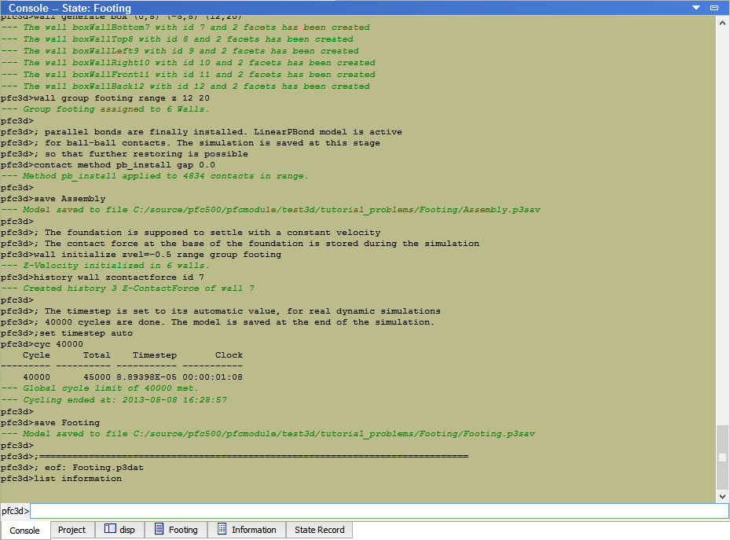

控制台窗格


图 1：控制台窗格
控制台（console） 的上部（较大的部分）包含消息输出。该窗格的输出部分会回显命令、提供命令处理状态信息，并显示命令处理产生的任何警告、错误或确认输出。窗格的下部包含 命令提示符（command prompt）（例如 pfc3d>）。程序命令（commands）在命令提示符处输入。请参阅 命令索引（Command Index） 和 FISH 索引（FISH Index） 以访问所有程序命令和 FISH 函数。
对于所有命令处理——无论是在命令提示符处还是通过数据文件进行——一条命令都可能影响以下一项或多项：程序状态、项目状态或模型状态。影响程序状态的命令的一个很好例子是 set log on，此前的命令已过时；在可能时更新，它会使写入文本输出的所有信息都保存到日志文件中（该命令的等效设置可在 选项对话框（Options dialog） 的“常规”部分中设定）。调用数据文件（program call）、保存模型（model save）、恢复模型（model restore） 和 新建模型（model new） 命令都会对项目状态和模型状态产生影响。所有 c 绘图（plot） 命令仅影响项目状态。一般而言，所有其他命令都是针对模型状态的，不会影响项目状态或程序状态。前面的信息似乎帮助不大；可能需要重新考虑
操作
在提示符处
命令在命令提示符处发出（PFC 中为 pfc>；FLAC3D 中为 flac3d>）：在提示符处键入命令并按 ↵Enter。提示符处的文本可以被选择并复制；也可以向提示符处粘贴文本。
除键入命令外，还可以执行其他一些操作。
在提示符处单击右键可提供以下选项：
- 撤销最后一条命令（如果可能；否则该命令被禁用）
- 重做最后一条命令
- 选择文本，以及剪切、复制或删除所选文本（这些操作也可通过以下按键命令完成：分别按
Ctrl+X、Ctrl+C、Backspace或Delete） - 粘贴文本（也可通过
Ctrl+V键命令完成）
提示符处有四个特殊的按键命令可提供帮助。
- 在活动行上按
Ctrl+spacebar可访问 内联帮助（Inline Help） 功能。如果在该行上识别出可识别的命令或 FISH 函数，该工具将提供一个交互式关键字列表，这些关键字可插入当前光标位置。如果提示符处没有可识别的命令，则打开 程序命令。 - 按
F1可打开提示符中当前命令（如果可识别）的文档页面。如果光标位于某个已识别关键字处或其后，文档将在定义该关键字的具体位置打开相应页面。如果提示符处没有可识别的命令，则打开文档首页。 - 按
?可在控制台输出中打印当前光标位置可使用的关键字列表。如果提示符处没有可识别的命令，则会在对话框和控制台输出中产生错误。 - 按向上和向下方向键（
↑和↓）可在先前发出的命令列表中前后浏览。
在输出区中
控制台 窗格输出区域中的操作很直接：
- 选择文本（在光标处单击并拖动）
- 选择全部文本（单击右键并选择“全选”）
- 复制（在有选中内容时单击右键并选择“复制”）
- 全部清除（单击右键并选择“清除全部”）
在 控制台 窗格中工作的其他方面
- 用户可通过 选项对话框（Options Dialog） 中的“控制台”面板自定义控制台输出的外观、长度和类型（在工具栏上按“选项”按钮（
 ）即可访问）。
）即可访问）。 - 当 控制台 窗格处于活动状态时，工具栏上可用的操作在 控制台窗格工具栏（Console Pane Toolbar） 主题中介绍。
- 控制台中的输出可以保存到日志中。请参见 选项对话框（Options Dialog） 中的“常规”面板，或在命令提示符处使用 设置日志记录（
program log） 命令。 - 关于 控制台 窗格处于活动状态时可用的其他功能，请参阅 控制台窗格中的控制面板（Control Panel in the Console Pane） 主题。
控制台 窗格上的操作
有关可对 控制台 窗格执行的操作的信息，请参见 窗格（Panes） 一节：移动（moving）、调整大小（resizing）、浮动（floating）、停靠（docking）、显示/打开（showing/opening）、隐藏/关闭（hiding/closing）。
| 这些内容对您有帮助吗？… | FLAC3D © 2019, Itasca | 原文更新于 2020 年 10 月 8 日 |
| 版权与免责声明 | ||